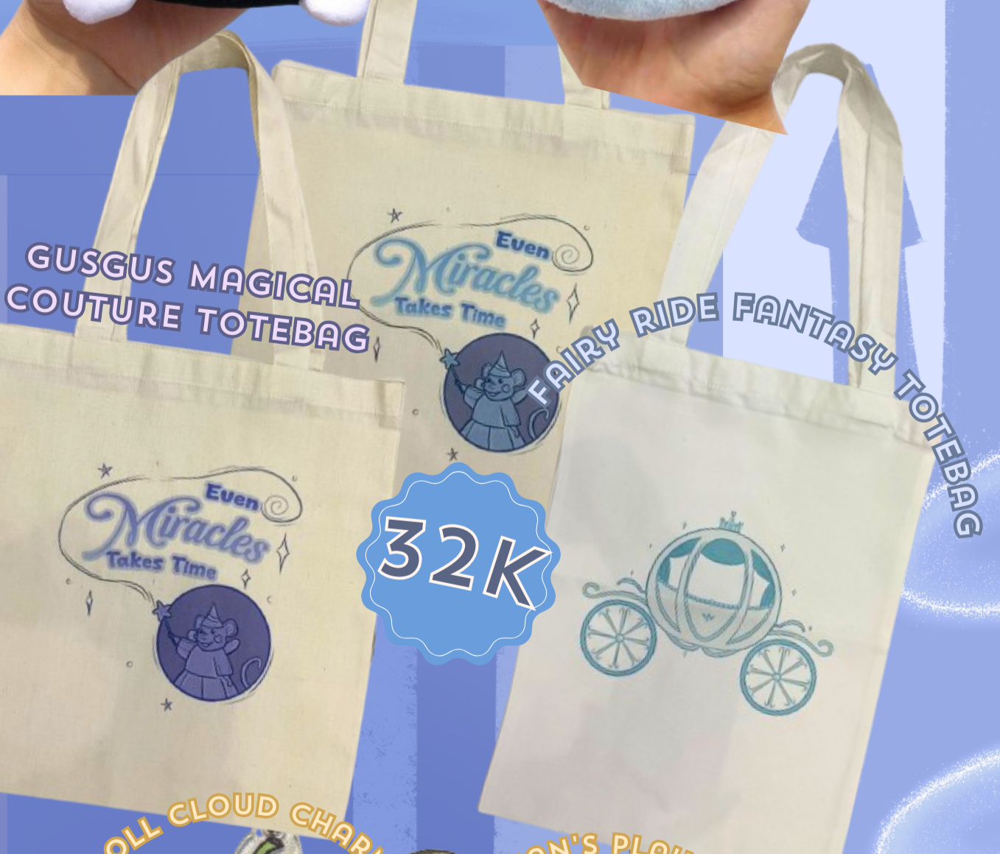
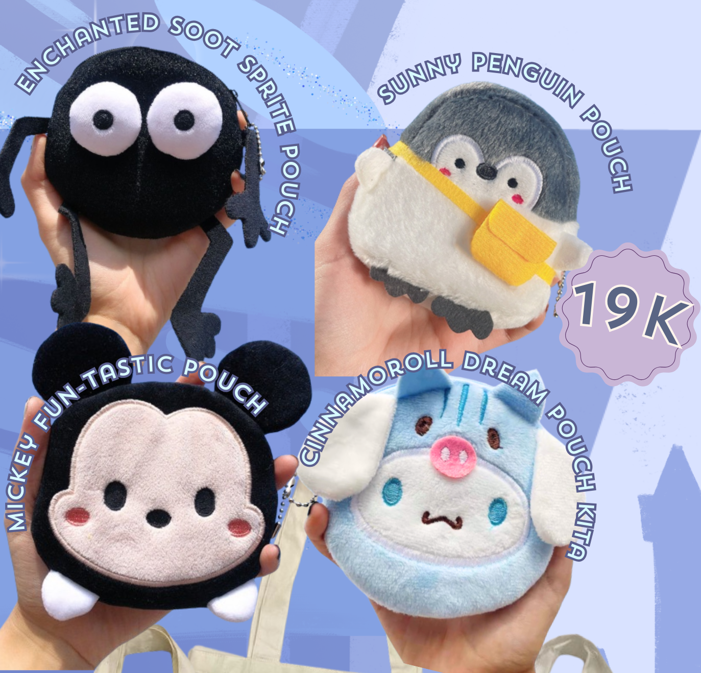
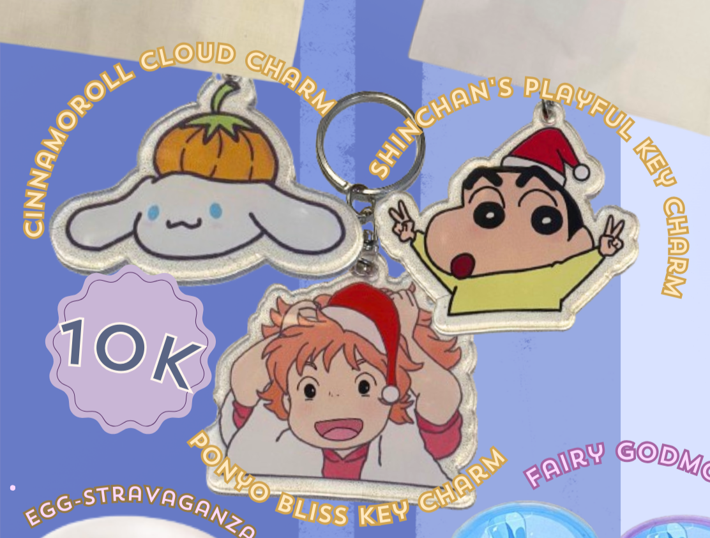
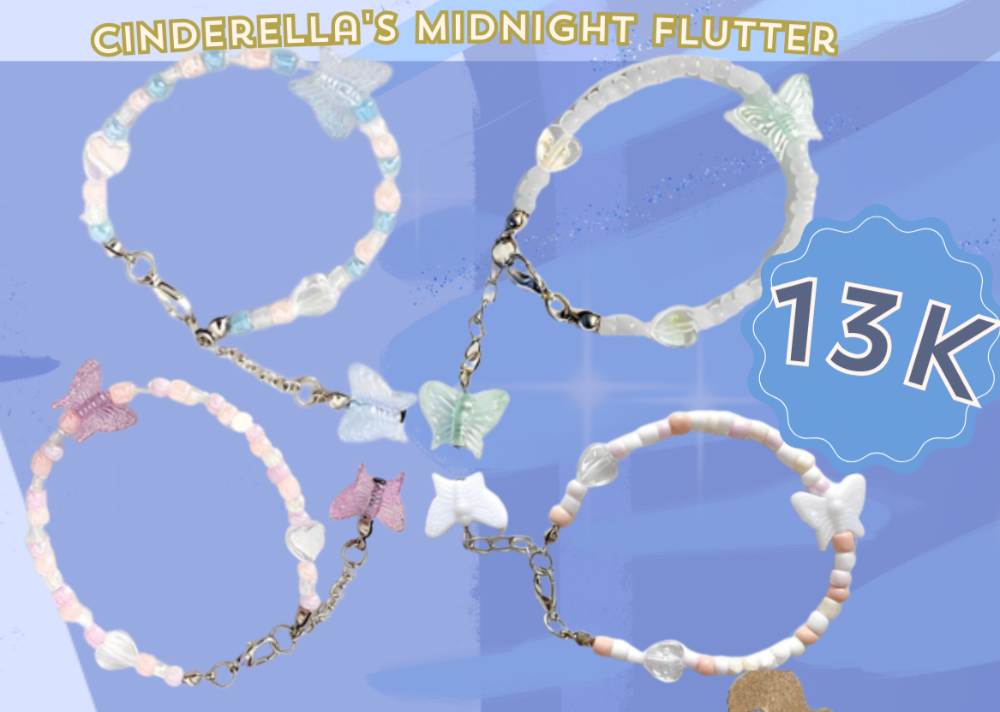
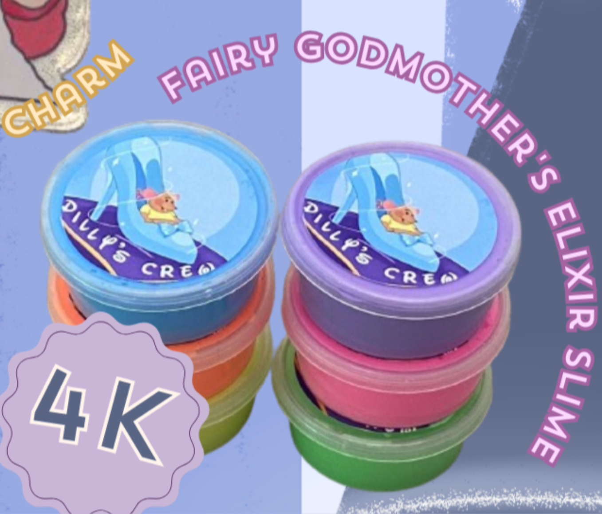
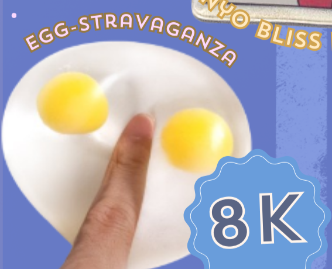
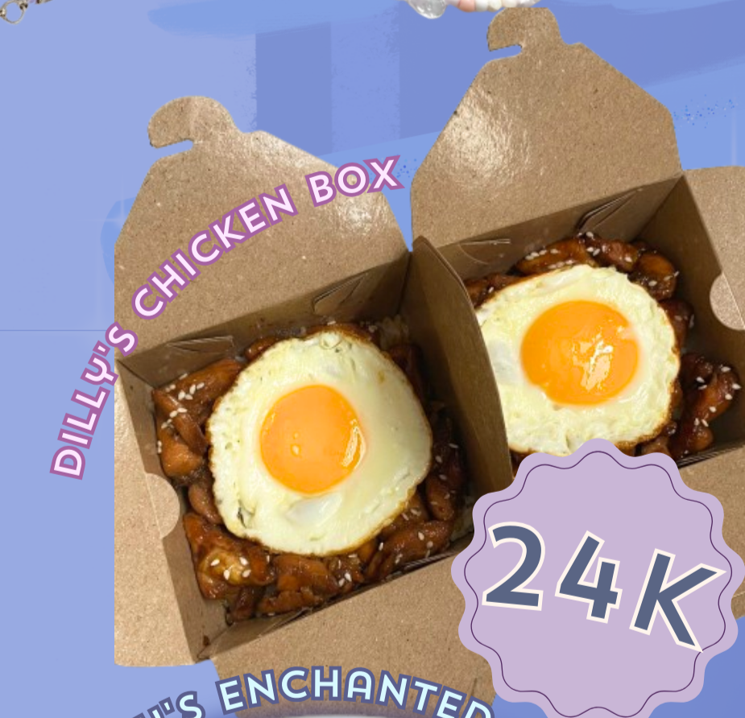
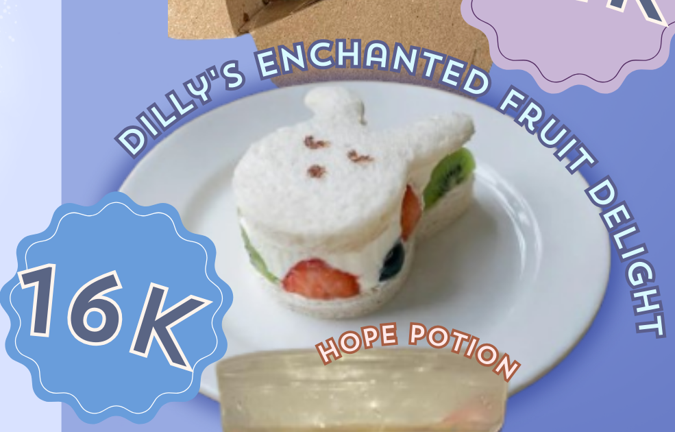
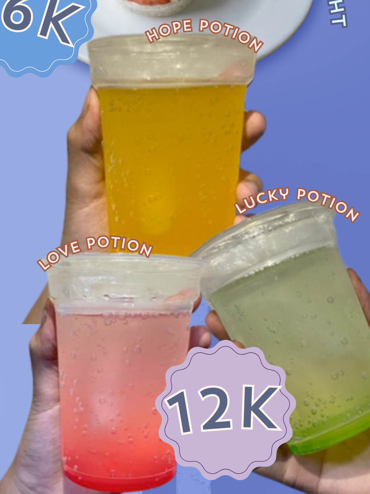

Welcome to...
Dilly's Crew Project
Cluck Cluck!
Like a glass slipper
Our products will slip in place.
Cluck Cluck!🐀
<= Our Playlist
Our Featured Products
|


 |
|


 |
|


 |
Kata Pengantar
Dengan rasa syukur dan kebahagiaan, kami bermaksud untuk menyampaikan laporan ini sebagai hasil dari kegiatan bazar yang telah kami selenggarakan. Berkat kerja keras, dan kerjasama semua pihak yang terlibat, acara ini telah berhasil, dan dapat terwujud nyatakan. Perkenankan saya menyampaikan terima kasih yang sebesar-besarnya kepada semua pihak yang telah turut berperan aktif dalam kelancaran penyelenggaraan bazaar ini terutama, kepada teman-teman sekelas, guru-guru, serta orang tua murid yang telah memberikan dukungan penuh selama proses persiapan dan pelaksanaan bazar ini.
Laporan ini mencakup berbagai aspek, mulai dari persiapan hingga pelaksanaan, serta mencatat hasil kerja yang telah kami raih bersama-sama. Harapan kami, laporan ini memberikan gambaran menyeluruh mengenai tahapan perencanaan, pelaksanaan, dan evaluasi mengenai bazar yang telah kami laksanakan. Setiap langkah yang diambil mencerminkan kerja sama tim yang erat, dan kesungguhan kami dalam menjalankan tugas ini. Tidak hanya kepada pihak sekolah tetapi juga kepada semua yang berkepentingan. Semoga ini bukan hanya sebuah dokumentasi formal, melainkan juga sarana untuk memahami proses dan hasil yang dicapai selama kegiatan bazar.
Semoga laporan ini dapat memberikan gambaran yang jelas tentang kontribusi positif yang telah dihasilkan, dan menjadi motivasi untuk melanjutkan tradisi kegiatan bazar demi kemajuan bersama. Kami berharap agar dukungan dan partisipasi semua pihak dapat terus mengalir, memupuk semangat kewirausahaan, serta mempererat hubungan komunitas di masa mendatang.
Akhir kata, kami mengucapkan terima kasih kepada semua pihak yang telah berkontribusi. Semoga laporan ini dapat memberikan gambaran yang jelas dan inspiratif mengenai partisipasi kami dalam bazar sebagai bagian dari pembelajaran di lingkungan sekolah.